지속 가능한 배터리 재활용을 위한
화학소재 및 친환경 차세대 공정기술

COMPANY
기업소개
2
기업명
주식회사 코솔러스
대표자
김성현
임직원
27명
소재지
대한민국 전주, 익산, 완주, 군산
비전
사용 후 배터리 핵심광물 회수를 위한 혁신 화학소재와 친환경 공정 기술을 통해, 인류의 지속가능한 미래를 선도하는 글로벌 리더로 도약
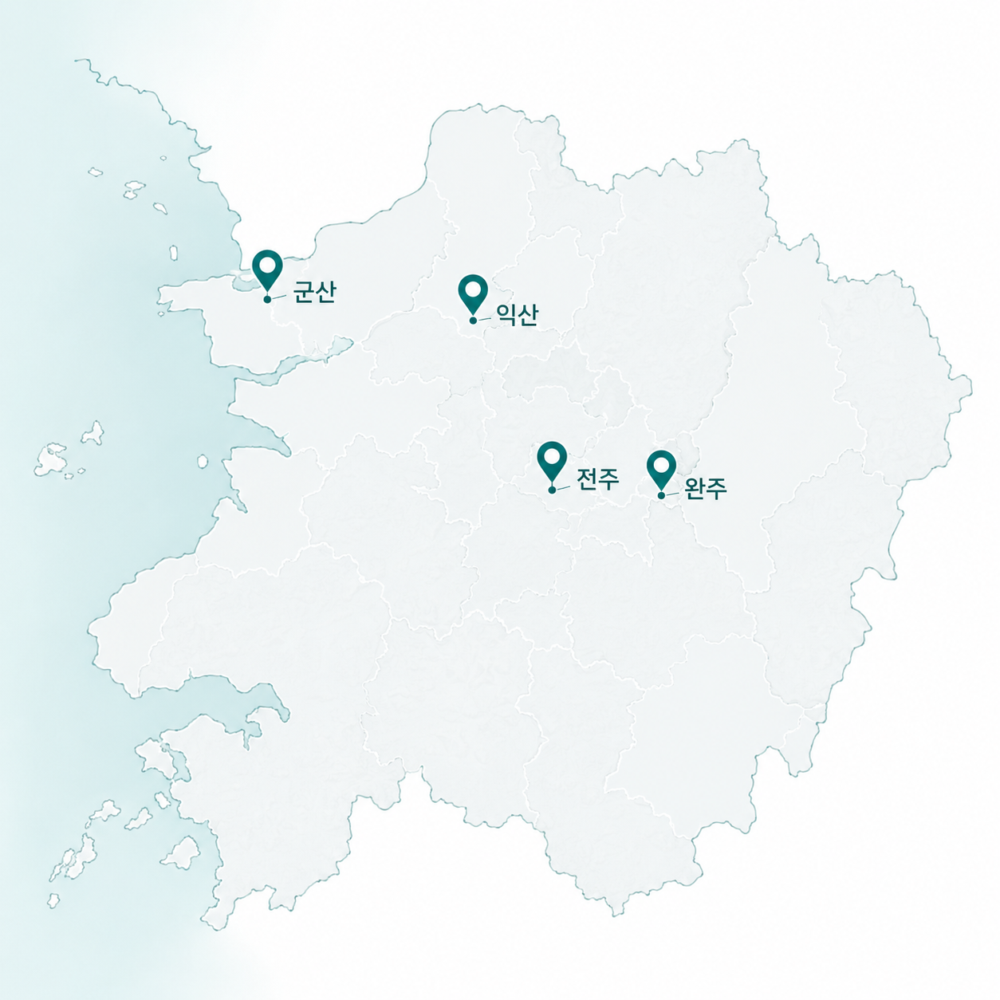
BACKGROUND
문제제기 - 환경 및 지정학적 요인
3
니켈 1톤당 133톤 폐기물 발생
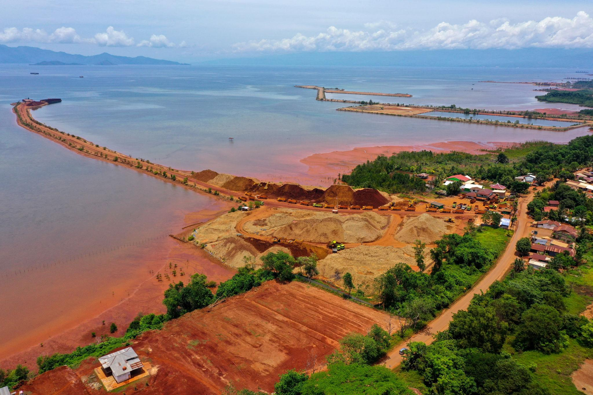
채굴 산업의 노동 및 인권문제
채굴 공급만으로는 수요를 감당하지 못해 리튬 부족이 심화된다
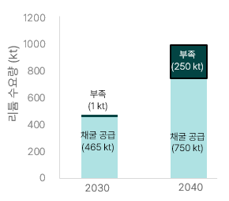
2030년 채굴공급 465kt·부족 1kt → 2040년 채굴공급 750kt·부족 250kt
중국이 전략광물 정제 평균 점유율 70%를 장악하고 있다
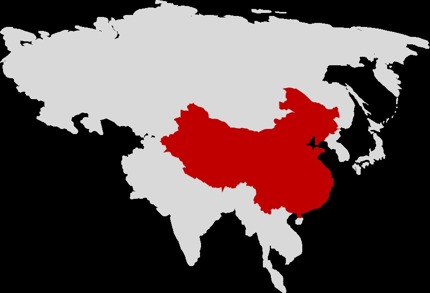
전략광물 20개 중 19개 정제 1위 · 정제 평균 점유율 70% · 글로벌 블랙매스 처리 비중 89%
Source: IEA, Global Critical Minerals Outlook 2025; Benchmark Mineral Intelligence, China's Battery Recycling Dominance, 2025; Earthworks, Filtered Tailing in Indonesia, 2026
BACKGROUND
왜 지금인가? - 산업적 요인
4
전기차 폐배터리 발생량이 2030년부터 폭발적으로 증가한다
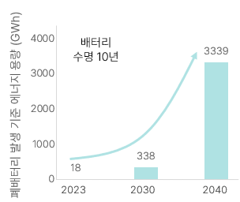
2023: 18GWh → 2030: 338GWh → 2040: 3,339GWh (배터리 수명 10년 기준)
북미 ESS 시장이 고성장 국면으로 전환된다
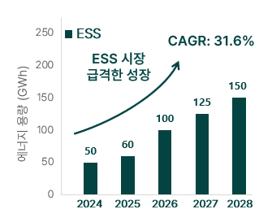
2024: 50GWh → 2028: 150GWh (CAGR 31.6%)
시장이 본격 개화하기 전에 재료·공정을 지금 확보해야 한다
“Historically, it typically takes 10 to 20 years to move a material from initial discovery to market.”
신소재가 발견에서 시장 진입까지 통상 10~20년 소요 — 출처: White House Office of Science and Technology Policy
Source: SNE Research (2023); Mirae Asset Securities Research Center (Jan. 2026); Korea Automotive Technology Institute (KATECH), Mobility Insight (Apr. 2024; citing SNE Research)
BACKGROUND
비즈니스 모델
5
유해물질 억제 및 온실가스 감축으로
환경 오염 저감
환경 오염 저감
폐자원으로부터 핵심 광물 확보로
배터리 원재료 수요부족 해결
배터리 원재료 수요부족 해결
제조 → 재활용 → 제조로 이어지는
재활용 기반 新공급망 구축
재활용 기반 新공급망 구축
BACKGROUND
재활용 공정 현황 (1세대)
6
[전처리공정]
[후처리공정]

폐배터리

블랙매스

양극재 재활용 공정
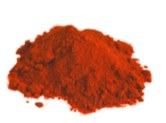
CoSO4
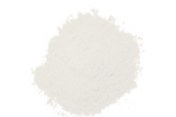
MnSO4

NiSO4

Li2CO3
+

폐흑연
MnSO4 · CoSO4 · NiSO4 · Li2CO3 + 폐흑연
▼ 소재 및 공정 개선 필요
소재의 한계
- 낮은 선택성
- 제한된 동작 환경(pH 등)
- 상분리 불안정
- 부산물 과다발생(망초 등)
공정의 한계
1세대 재활용 공정 경제성 확보 실패

BACKGROUND
[솔루션1] 개요 - 고성능 추출제 (1.5세대 화학소재)
7
폐배터리
블랙매스
추출제 적용 위치
양극재 재활용 공정
+
금속염 + 폐흑연
광산·염호 기반 금속 회수용
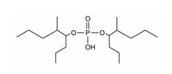
D2EHPA
재활용 효율 개선
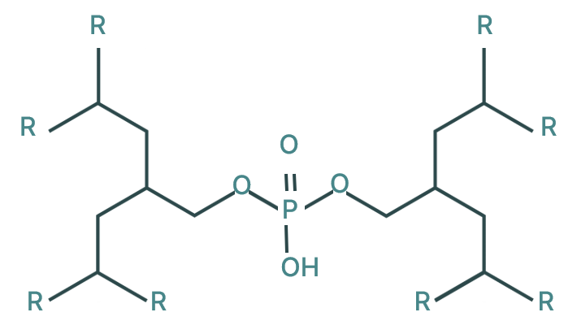
RECYION Series
TECHNOLOGY
핵심기술 - [솔루션1-1] 고성능 추출제 (1.5세대 화학소재)
8
| COSOLUS | 벨기에 S사 | 중국 K사 | |
| 공정시간 |
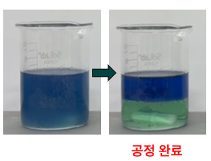 |
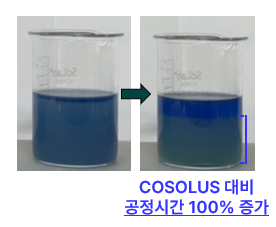 COSOLUS 대비 공정시간 100% 증가
|
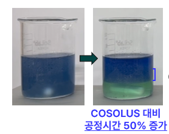 COSOLUS 대비 공정시간 50% 증가
|
| 첨가제 사용량* | - | COSOLUS 대비 10% 이상 추가 첨가제 필요 | COSOLUS 대비 5% 이상 추가 첨가제 필요 |
*블랙메스 1톤당 첨가제 사용량
TECHNOLOGY
핵심기술 - [솔루션1-1] 고성능 추출제 (1.5세대 화학소재)
9
추출 효율 2~5% 개선 → 추출 단수 1단 저감 (CAPEX 경제성 확보)
| 구분 | 기존 추출제 | COSOLUS 추출제 |
|---|---|---|
| 추출단수 | 5 | 4 |
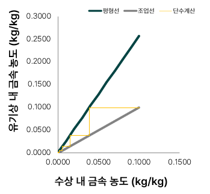
기존 추출제(5단)
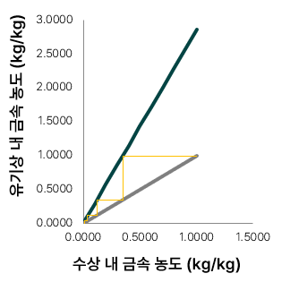
COSOLUS 추출제(4단)
추출단수 1단 저감 → 망초 >5% 저감 (OPEX 경제성 확보)
| 구분 | 기존 추출제 | COSOLUS 추출제 |
|---|---|---|
| 니켈 1톤당 망초양 | 3.6톤 | 3.3톤 |
4,800톤
대한민국 배터리 재활용 업체 1년간 니켈 16,000톤 생산 시 COSOLUS 추출제로 저감 가능한 망초량
TECHNOLOGY
경쟁력 - [솔루션1-1] 고성능 추출제 (1.5세대 화학소재)
10
|
KopperChem | Solvay | |
| Country | KOREA | China | Belgium |
| 국가 | RECYION series | Mextral series | CYANEX series |
| 가격 | ◎ | ◎ | ◎ |
| 추출성능 | ◎ | ◎ | ◎ |
| 공정시간 | ◎ | ○ | △ |
| 첨가제 사용량* | ◎ | ○ | △ |
| 탄소중립 | ◎ | △ | ○ |
평가기준: ◉ 매우 좋음 ○ 좋음 △ 보통
TECHNOLOGY
[솔루션1-2] 직접 리튬 추출 (DLE, Direct Lithium Extraction)
11
침출
불순물 제거
① Mn 추출
② Co 추출
③ Ni 추출
④ 역추출
증발농축 기반 Li 회수 (3.12%)
NCM or LFP 스크랩
① Li 추출
침출 후 재활용
침출
불순물 제거
① Li 추출
추출 후 재활용

기존 DLE(증발법) — 염호 증발 연못
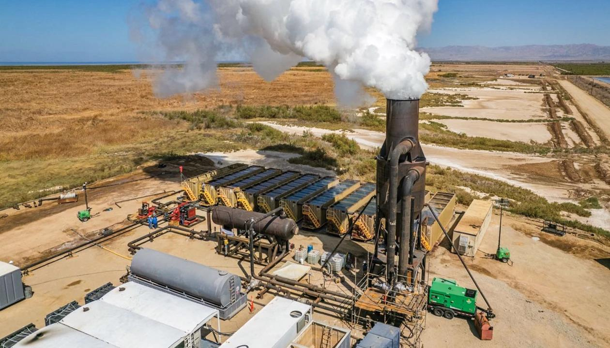
기존 DLE(증발법) — 지열 브라인 설비
TECHNOLOGY
[솔루션1-2] DLE 기술 동향
12
| 흡착제 | 추출제 | 분리막 | 전기화학 | |
| 작동원리 | 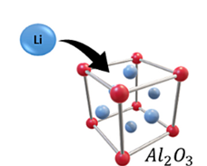 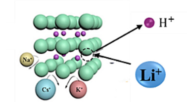 Li⁺(액상)과 흡착제(고상)간 선택적 상호작용 |
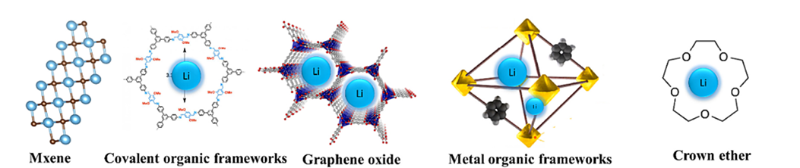 Li⁺(액상)과 추출제(액상)간 선택적 상호작용 |
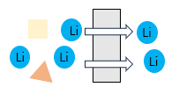 Li⁺(액상)의 분리막(고상)을 통한 선택적 이동 |
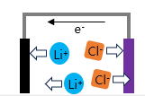 Li⁺(액상)과 전극(고상)간 선택적 상호작용 |
| 기술성숙도(TRL) | TRL 9 상용화 단계 |
TRL 4-5 실험실 검증 단계 |
TRL 4-5 실험실 검증 단계 |
TRL 3-4 실험실 검증 단계 |
| 장점 | 선택성 우수, 공정 단순 | 높은 회수 효율, 재사용 가능, 기존 공정 적용 가능 | 우수한 효율, 공정 단순, 낮은 화학약품 사용량 | 우수한 효율, 낮은 화학약품 사용량 |
| 단점 | 재사용성 제한, 높은 운영비용 | 높은 운영비용 | 높은 운영비용 | 복잡한 시스템, 대규모 양산 적용에 한계 |
Source: Desalination, 2024, 575, 117249
TECHNOLOGY
핵심기술 - [솔루션1-2] Extractant–Separator 핵심 장점
13
① 추출제와 리튬 이온(Li⁺) 간의 액-액 접촉을 통한 빠른 물질 전달
② 추출제에 의한 화학적 결합 및 분리막에 의한 공간적 분리를 통한 우수한 재활용 효율
③ 액상 공정을 통한 용이한 연속 운전
④ 분리막 기반 농축을 통한 첨가제 소모량 감소
[ 흡착제 ]
[ 전기화학 ]
[ 추출제 & 분리막 ]
TECHNOLOGY
핵심기술 - [솔루션1-2] COSOLUS DLE
14
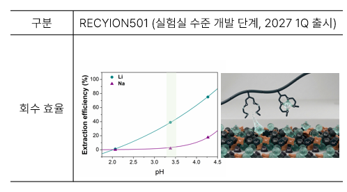
RECYION501(실험실 수준 개발단계, 2027년 1분기 출시 예정) — pH별 Li/Na 회수효율 곡선
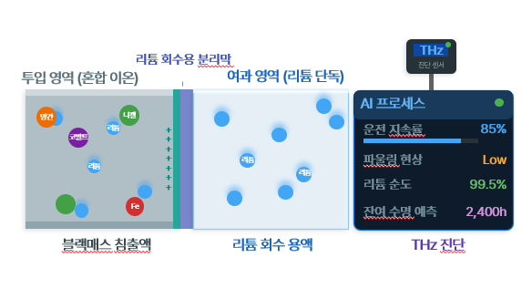
THz 진단: 운전지속률 85% · 파울링현상 Low · 리튬순도 99.5% · 잔여수명예측 2,400h
Source: KOMIS, Conventional vs. direct vs. electrochemical lithium extraction: a holistic TEA–LCA of lithium carbonate production from spodumene (Green Chem., 2026, 28, 1144)
TECHNOLOGY
[솔루션2] 개요
15
SOLUTION 02
친환경 차세대 배터리 재활용 공정기술
(2세대)
(2세대)
TECHNOLOGY
핵심기술 - [솔루션2] 친환경 차세대 배터리 재활용 공정기술 (2세대)
16
블랙매스전처리 공정
양극재용
블랙매스
블랙매스
건식환원
부유선별
니켈 · 코발트
음극재용
블랙매스
블랙매스
유도가열
고순도 정제흑연
TECHNOLOGY
핵심기술 - [솔루션2] 건식환원
17
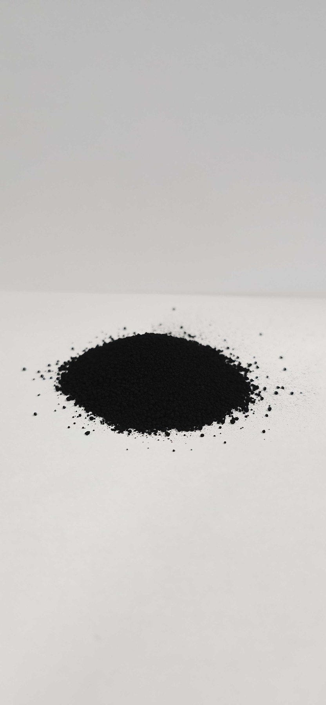
양극재용 블랙매스
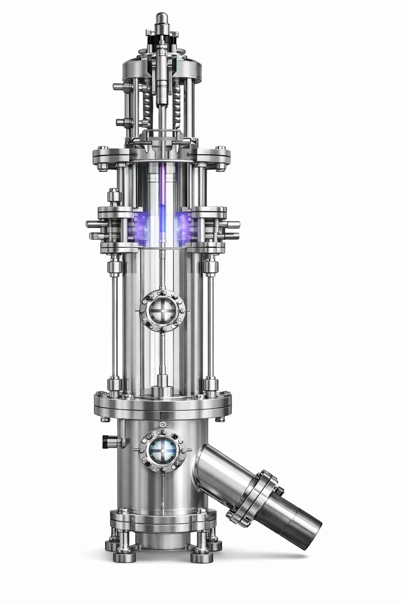
건식환원

Co 회수
건식환원에 의한 코발트(or 니켈) 회수
Co 회수(순도>95%) · *PCT 2건 출원
TECHNOLOGY
핵심기술 - [솔루션2] 유도가열
18
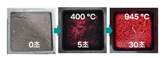
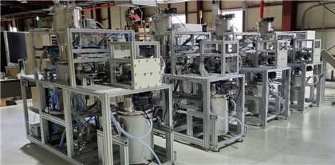
기존 소성로 (Pusher Kiln)
- 10시간 이상 장시간 소요
- 낮은 온도 정밀도
- 높은 시설 투자비용
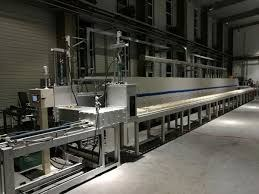
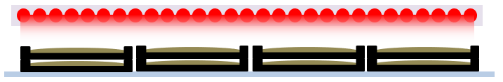
TECHNOLOGY
경쟁력 - [솔루션2] 친환경 차세대 배터리 재활용 공정기술 (2세대)
19
|
BTR | Vianode | |
| 국가 | Korea | China | Norway |
| 기술 | 유도가열 (약 950℃) | 전기로 (3,000℃) | 대류 가열 (3,000℃) |
| 처리시간 | 1분 이내 | 약 24시간 | 약 48시간 |
| 특징 | 낮은 에너지 소비량, 연속 공정, 직접 가열 | 높은 에너지 소비량, 비연속 공정, 간접 가열 | 보통 수준의 에너지 소비량, 비연속 공정, 간접 가열 |
경영지원팀
(2명)
(2명)

CEO
김성현
화학공정기술
▪ 2008.08 서울대 응용화학부 박사
▪ 2016.09~ 원광대 탄소융합공학과 교수
▪ 2020.07~ ㈜코솔러스 CEO
▪ 논문 71편, 특허 24편
▪ 2016.09~ 원광대 탄소융합공학과 교수
▪ 2020.07~ ㈜코솔러스 CEO
▪ 논문 71편, 특허 24편
기업부설연구소
AI혁신팀
CTO
장재규
유기합성
▪ 2021.08 서울대 화학부 박사
▪ 2020.07~ ㈜코솔러스 CTO
▪ 논문 18편, 특허 2편
▪ 2020.07~ ㈜코솔러스 CTO
▪ 논문 18편, 특허 2편
개발1팀 (6명)
개발2팀 (4명)
개발3팀 (3명)
공동개발: 임춘우 교수(개발1팀), 김양배 교수(개발2팀)

CSO
민사훈
분자 시뮬레이션
▪ 2013.02 서울대 화학생물공학부 박사
▪ 2024.02~ ㈜코솔러스 CSO
▪ 논문 25편, 특허 5편
▪ 2024.02~ ㈜코솔러스 CSO
▪ 논문 25편, 특허 5편
AI혁신팀 (4명) — AI 기반 차세대 재활용 공정기술

COO
오성환
기술영업
▪ 2012.05 악조노벨(SSCP) 영업매니저
▪ 2023.11~ ㈜코솔러스 COO
▪ 2023.11~ ㈜코솔러스 COO
생산1팀 (1명)
공동개발: 장세건 이사(생산 1팀)
COMPANY
조직구성
20
EXECUTIVE SUMMARY
투자포인트
21
기술력 및 사업화
[기술력]
- 추출제 최상위 수준의 합성 및 정제 기술
- 친환경 공정 기술(건식환원 및 유도가열 기술)
- Closed-loop system 합성/공정 기술로 환경부담 최소화
[사업화 방향]
- (1.5세대-RECYION Series) XX하이텍, XX코 등 현장적용을 고려한 PoC 진행 중
- (2세대-친환경 공정기술) XX자동차 연계 신공급망 구축
- 일본 및 인도네시아 시장 진출(파일롯 기술검증 후 JV 설립)
예상 소요자금 (투자금 및 대출)
[투자라운드]
Series A2
80억원
목표 투자유치 금액
[투자금 사용 계획]
- 글로벌 진출을 위한 국외법인 설립 및 운영
- 공장 건설을 위한 토지 구매 및 건축 비용, 추출제 CAPA 확대, 공정 파일롯
MILESTONE
세계시장 진출
22
TODAY
GLOBAL
’26
파트너십 구축
일본·인도네시아 배터리 재활용 파트너십 구축
’27~28
PoC 획득
추출제 및 공정기술 PoC 획득
’29~
판매 및 서비스 제공
추출제 판매 및 공정 서비스 제공
[일본 및 인도네시아 진출을 위한 논의 현황] 인도네시아 전기자전거 업체 1대주주와 투자논의 중 · 일본 현지투자사, 재료업체 등과 투자논의 중
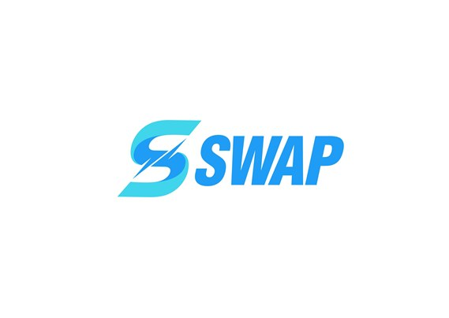
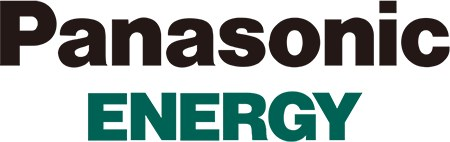

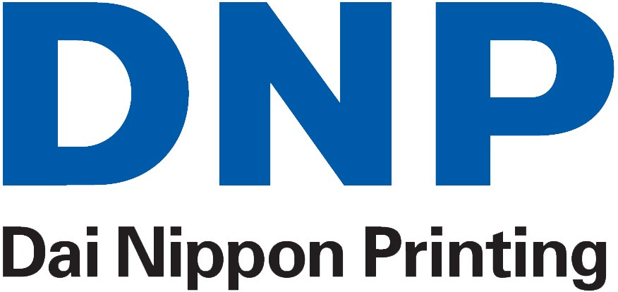

Thank You